가스기사 (2003-05-25 기출문제)
1과목: 가스유체역학
1. 그림과 같은 관에서 유체가 유동할 때 마하수는 Ma ＜ 1이라 한다. 이 때 압력과 속도의 변화에 대해서 맞게 설명한 것은? (단, 압력은 P, 속도는 v로 표시함)
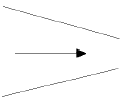
- dv : 증가, dP : 감소
- dv : 증가, dP : 증가
- dv : 감소, dP : 감소
- dv : 감소, dP : 증가
(정답률: 59%)

2. 그림과 같이 지름 0.04m 인 관이 분기되었다가 C지점에서 만난다. A지점의 유체(물)가 60m/sec 의 속도로 움직여서 B지점에서 30m/sec 유입되는 본류와 C지점에서 충돌했을 때 고정평판이 받는 힘은?
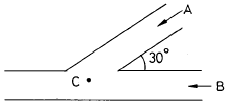
- 56.7㎏
- 113.3㎏
- 156.5㎏
- 203.9㎏
(정답률: 73%)
3. 진공상태의 용기에 밸브가 설치되어 있다. 이 때 밸브를 갑자기 열어 3㎫, 300K 의 공기가 용기안으로 들어오게 하여 용기의 압력이 3㎫ 이 되었을때 바로 밸브를 닫았다. 이 때 용기안의 마지막 평형 상태온도는? (단, u = CvT 이고 Cv = 0.716KJ/㎏ㆍ°K 이고, h = CPT 이고 CP = 1.0⑤KJ/㎏ㆍ°K 로 가정한다.)
- 300K
- 346K
- 387K
- 421K
(정답률: 알수없음)
4. 직경 10㎝ 의 원관내를 10㎝/s 로 흐르던 물이 직경 25㎝ 의 큰 관속으로 흐를 때 확대마찰 손실계수(Ke)는?
- 0.36
- 0.60
- 0.71
- 0.84
(정답률: 알수없음)
5. 유체흐름에 관한 설명으로 옳지 않은 것은?
- 원관속에서 유체가 정상 층류운동을 하고 있을 때 가장 중요한 힘은 점성력과 관성력이다.
- 정상흐름이란 유체입자가 서로 층을 형성하여 규칙적이고 질서있게 흐르며 마찰에 의한 에너지 손실이 없는 것이다.
- 질량보존의 법칙은 이상유체뿐만 아니라 실제유체에 그대로 적용할 수 있다.
- 뉴톤의 점성법칙은 전단응력, 점성계수 및 각 변형률 변수의 함수관계를 나타낸다.
(정답률: 30%)
6. 압축성 유체가 공기 중에 노출되어 단열되지 않은 관을 통해 흐르고 있을 때, 음향속도 a 와 최대속도 a'의 관계식
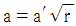
이다. 이 때 압축성 유체가 공기인 경우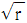
의 값은?- 1.4
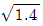
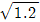
- 1.8
(정답률: 알수없음)
7. 축류펌프의 날개 수가 증가할 때 펌프성능은?
- 양정이 일정하고 유량이 증가
- 유량과 양정이 모두 증가
- 양정이 감소하고 유량이 증가
- 유량이 일정하고 양정이 증가
(정답률: 37%)
8. 원심펌프에 대한 설명으로 옳지 않은 것은?
- 액체를 균일한 압력으로 수송할 수 있다.
- 캐비테이션 현상은 잘 일으키지 않는다.
- 마감점이 낮고 마감기동이 가능하다.
- 양정거리가 크고 수송량이 적을 때 사용된다.
(정답률: 알수없음)
9. 탱크 안의 액체의 비중량은 0.7g/cm3 이며 압력은 3kg/cm2이다. 이를 수두로 나타내면?
- 4.286m
- 42.86m
- 0.429m
- 428.6m
(정답률: 59%)
10. 질량보존의 법칙을 유체유동에 적용한 방정식은?
- 오일러 방정식
- 달시 방정식
- 운동량 방정식
- 연속 방정식
(정답률: 64%)
11. 550K인 공기가 15m/sec 의 속도로 매끈한 평판위를 흐르고 있다. 경계층이 층류에서 난류로 천이하는 위치는 선단에서 거리가 얼마인가? (단, 동점성계수는 4.2 × 10-5m2/sec)
- 0.7m
- 1.4m
- 2.1m
- 2.8m
(정답률: 42%)
12. 밀도가 84.6 kg/m3 인 유체의 비중량은?
- 8.64 N/m3
- 86.4 N/m3
- 829 N/m3
- 82.9 N/m3
(정답률: 알수없음)
13. 평균풍속 10m/sec 인 바람 속에 매끈한 평판을 바람과 평행으로 놓았을 때 평판의 선단으로부터 5cm 되는 곳에서의 레이놀드수는? (단, 동점성계수는 0.156 × 10-4m2/sec이다.)
- 3.2 × 104
- 6.4 × 108
- 1.8 × 104
- 9.8 × 105
(정답률: 54%)
14. 수평원관내에서 유체의 흐름이 층류일 때 전단응력의 분포는?
- 전단면에 걸쳐서 일정하다.
- 관벽에서 0 이고 중심에서 최대의 값을 갖는다.
- 관중심에서 0 이고 관벽까지 직선적으로 증가한다.
- 관중심에서 0 이고 반지름의 제곱에 비례한다.
(정답률: 20%)
15. 음속을 C, 물체의 속도를 V 라고 할 때, Mach수 는?
- V/C
- V/C2
- C/V
- C2/V
(정답률: 100%)
16. 전단속도가 증가함에 따라 점도가 감소하는 유체는?
- 딕소트로픽(thixotropic) 유체
- 레오펙틱(rheopectic) 유체
- 빙햄플라스틱(Bingham plastic) 유체
- 뉴톤유체(Newtonians)
(정답률: 24%)
17. 원통형 기름탱크의 깊이가 63 ft 인데, 밀도 45 lbm/ft3인 기름이 들어있고 상부는 대기로 열려있다. 이 탱크 바닥에서의 계기압력은?
- 16.5 lbf/in2
- 17.7 lbf/in2
- 18.6 lbf/in2
- 19.7 lbf/in2
(정답률: 10%)
18. 제트엔진이 300m/sec 에서 작동하여 30kg/sec 의 공기를 소비한다. 1000kg 의 추진력을 만들기 위해 배출되는 연소가스의 속도는 몇 m/sec 인가?
- 424.7
- 547.6
- 626.7
- 745.6
(정답률: 16%)
19. 베르누이 정리 식에서 V2/2g 는 무엇을 의미하는가?
- 압력수두
- 위치수두
- 속도수두
- 전수두
(정답률: 72%)
20. 피스톤의 단면적을 A[m2], 행정을 ℓ[m], 회전수를 n[rpm]이라 할 때 이론 송출량 Qth을 나타내는 식은?
- Qth = Aㆍℓㆍn[m3/min]
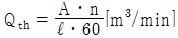
- Qth = 2ㆍAㆍℓㆍn[m3/min]
- Qth = π ㆍAㆍℓㆍn[m3/min]
(정답률: 알수없음)
2과목: 연소공학
21. 100℃의 물 1g이 수증기가 될 때 엔트로피 변화는 얼마인가?
- 0.293cal/K
- 0.875cal/K
- 1.445cal/K
- 2.875cal/K
(정답률: 13%)
22. 아래의 가스폭발 위험성 평가기법 설명은 어느 기법인가?
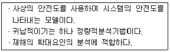
- FAH(Fault Hazard Analysis)
- JSA(Job Safety Analysis)
- EVP(Extreme Value Projection)
- ETA(Event Tree Analysis)
(정답률: 알수없음)
23. 층류연소속도의 측정법이 아닌 것은?
- 분젠버너법
- 슬로트버너법
- 다공버너법
- 비누방울법
(정답률: 37%)
24. 폭발의 위험도를 계산하는 것이 바르게 표현된 것은? (단, H : 위험도, U : 폭발한계상한, L : 폭발한계하한)
- H = U-L/L
- H = U/L
- H = U-L/U
- H = L/U
(정답률: 87%)
25. 그림은 어떤 냉매의 P-H 선도이다. 냉매의 증발과정을 표시한 것은?
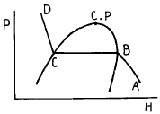
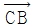
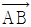
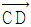
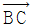
(정답률: 34%)
26. 이상기체에 관한 설명중 틀린 것은?
- 응축시키면 액화될 수 있다.
- 기체분자 자신의 부피를 무시한다.
- 분자 사이에는 인력이나 반발력이 작용하지 않는다.
- 저압, 고온하의 실제 기체는 이상기체의 성질을 가진다.
(정답률: 42%)
27. 다음중 연소의 3대 요소가 아닌 것은?
- 공기
- 가연물
- 시간
- 점화원
(정답률: 79%)
28. 최고온도 600℃와 최저온도 50℃사이에서 작동되는 열기관의 이론적 효율은?
- 35.15%
- 46.06%
- 57.27%
- 63.00%
(정답률: 36%)
29. 실린더 속에 N2 가 0.5 mol, O2가 0.2 mol, H2가 0.3 mol 이 혼합되어 있을 때 전체의 압력이 1atm 이었다면 이 때 산소의 부분압력은 몇 mmHg 인가?
- 152
- 179
- 182
- 194
(정답률: 알수없음)
30. 다음 기체 연료 중 발열량이 가장 낮은 연료는?
- 석탄가스
- 수성가스
- 고로가스
- 발생로가스
(정답률: 55%)
31. 열기관의 효율을 면적비로 나타낼 수 있는 선도는?
- 온도 - 체적선도
- 압력 - 온도선도
- 온도 - 엔트로피선도
- 엔탈피 - 엔트로피선도
(정답률: 알수없음)
32. 다음 중 가역과정으로 볼 수 없는 것은?
- carnot 순환계
- 노즐에서의 팽창
- 마찰이 없는 관내의 흐름
- 실린더내의 기체의 갑작스런 팽창
(정답률: 58%)
33. 연소의 열역학에 대한 설명 중 틀린 것은?
- 발열반응에서 활성화 에너지가 높다.
- 표준생성 엔탈피는△Hf° 로 표시한다.
- 흡열반응에서△Hr은 정(正)의 값을 가진다.
- 생성물질은 반응물질보다 절대값│△Hr│ 만큼 엔탈피가 낮다.
(정답률: 20%)
34. 발생로 가스의 가스분석 결과 CO2 3.2%, CO 26.2%, CH4 4%, H2 12.8%, N2 53.8%이다. 또한 가스 1Nm3중에 수분이 50g이 포함되어 있다면 이 발생로 가스 1Nm3을 완전연소 시키는데 필요한 공기량은 몇 Nm3 인가?
- 1.023
- 1.228
- 1.324
- 1.423
(정답률: 47%)
35. 다음 열량의 단위에 대한 설명중 틀린 것은?
- 1000000Btu를 1 Therm이라 한다.
- 1 CHV는 순수한 물 1[㎏]의 온도를 1°F 올리는데 필요한 열량
- 1 Btu는 순수한 물 1[lb]의 온도를 1°F 변화시키는데 필요한 열량
- 1kcal는 순수한 물 1[㎏]을 14.5℃ 에서 15.5℃ 까지 올리는데 필요한 열량
(정답률: 55%)
36. 노내의 분위기가 산성 또는 환원성 여부를 확인 할 수 있는 방법으로 가장 확실한 것은?
- 화염의 색깔을 분석한다.
- 연소가스 중의 CO 함량을 분석한다.
- 노내의 온도 분포 상태를 점검한다.
- 연소가스 중의 N2 함량을 분석한다.
(정답률: 70%)
37. 0.5atm 5L의 기체A, 1atm 10L의 기체B와 0.6atm 5L의 기체 C를 전체부피 20L의 용기에 넣을 경우 전압은 얼마인가? (단, 기체 A, B, C는 이상기체로 가정한다.)
- 0.625 atm
- 0.700 atm
- 0.775 atm
- 0.938 atm
(정답률: 27%)
38. 온도-엔트로피 변화를 나타내는 오토사이클 선도에서 계로부터 열이 방출되는 과정은?
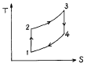
- 1 → 2과정
- 2 → 3과정
- 3 → 4과정
- 4 → 1과정
(정답률: 67%)
39. 다음 중 화염의 안정 범위가 넓고, 조작이 용이하며 역화의 위험이 없는 연소는?
- 표면연소
- 분해연소
- 확산연소
- 예혼합연소
(정답률: 알수없음)
40. 다음 설명 중 옳지 않은 것은?
- 압력이 상승하거나 온도가 높아지면 가스의 폭발범위는 넓어진다.
- 가스의 화염전파 속도가 음속보다 큰 경우에 일어나는 충격파 폭굉이라고 한다.
- 정상연소 속도가 큰 혼합가스 일수록 폭굉유도거리는 길어진다.
- 확산연소는 화염의 안정범위가 넓고 조작이 용이하며 역화의 위험이 없는 연소이다.
(정답률: 알수없음)
3과목: 가스설비
41. 압축기와 펌프에서 공통으로 일어날 수 있는 현상은?
- 캐비테이션
- 서어징
- 워터햄머링
- 베이퍼록
(정답률: 50%)
42. 냉동능력의 산정기준으로 사용하는 식은?
- R = V/C
- Q = (P + 1)V1
- W = 0.9 dV2
- W = V2/C
(정답률: 알수없음)
43. 도시가스 공급 설비에서 배관 부분의 압력손실을 구하는 식은? (단, H : 기점과 종점과의 압력차, Q : 가스유량[m3/hr], D : 구경[㎝], S : 가스의 비중, L : 배관길이[m], K : 유량계수)
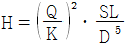
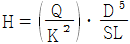
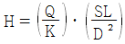
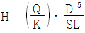
(정답률: 67%)
44. 다음 반응으로 진행되는 접촉분해 반응 중 카본생성을 방지하는 방법으로 옳은 것은? (단, 반응식 : 2CO → CO2 + C)
- 반응온도 : 낮게, 반응압력 : 높게
- 반응온도 : 높게, 반응압력 : 낮게
- 반응온도 : 낮게, 반응압력 : 낮게
- 반응온도 : 높게, 반응압력 : 높게
(정답률: 47%)
45. LP가스 충전시 압축기를 이용했을 때의 단점에 해당하는 것은?
- 충전시간이 많이 소요된다.
- 잔류가스 회수가 어렵다.
- 베이퍼록 현상 우려가 있다.
- 압축기 오일로 인한 드레인 현상 우려가 있다.
(정답률: 32%)
46. 암모니아의 취급에 대한 설명으로 옳지 않은 것은?
- 암모니아 건조제로 진한 황산을 사용한다.
- 진한염산과 접촉시키면 흰연기가 나므로 암모니아 누출을 검출할 수 있다.
- 고온, 고압이 되면 질화작용과 수소취성을 동시에 일으킨다.
- Cu 및 Al 합금과는 부식성을 가지므로 철합금의 장치를 사용한다.
(정답률: 알수없음)
47. 다음 그림은 원심펌프의 회전수 및 흡입양정이 일정할 때의 특성곡선이다. ① 의 곡선이 나타내는 것은? (단, 전양정 H, 축동력 L, 효율 η ,유량 Q 임)
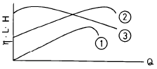
- 효율곡선
- 양정곡선
- 유량곡선
- 축동력곡선
(정답률: 46%)
48. 시간당 20000 kcal의 열을 흡수하는 냉동기의 용량을 냉동톤으로 표시하면?
- 2 냉동톤
- 4 냉동톤
- 6 냉동톤
- 8 냉동톤
(정답률: 25%)
49. 나프타 접촉분해법에서 개질온도 7⑤℃에서 개질압력을 1기압보다 높일 때의 가스조성의 변화로 옳은 것은?
- H2 와 CO 가 증가하고 CH4 와 CO2 가 감소한다.
- H2 와 CO 가 감소하고 CH4 와 CO2 가 증가한다.
- H2 와 CO 가 감소하고 CH4 와 CO 가 증가한다.
- CH4 와 CO 가 증가하고 H2 와 CO2 가 감소한다.
(정답률: 69%)
50. 압축가스 및 액화가스 저장용기의 내압 시험(TP) 조건은?
- 최고 충전 압력 × 3
- 최고 충전 압력 × 5/3
- 상용 압력 × 3
- 상용 압력 × 5/3
(정답률: 알수없음)
51. 도시가스설비의 전기방식의 종류가 아닌 것은?
- 전류양극법
- 외부전원법
- 선택배류법
- 압착전원법
(정답률: 알수없음)
52. 파이프 내에서의 유체의 마찰 손실에 대한 설명으로 옳은 것은?
- 파이프의 안지름과 지름에 비례하고 파이프내의 유속에 반비례 한다.
- 파이프내의 유속과 파이프 길이의 제곱에 비례하고 파이프의 안지름에 반비례한다.
- 파이프 길이와 유속의 제곱에 비례하고 파이프의 안지름에 반비례한다.
- 파이프 길이와 유속에 비례하고 파이프의 안지름에 반비례한다.
(정답률: 31%)
53. 도시가스의 누출을 쉽게 조기에 발견하는 방법으로 사용하는 부취제가 갖고 있어야 할 조건으로 옳지 않은 것은?
- 토양에 대해 투과성이 클 것
- 물에 잘 녹지 않을 것
- 가스관에 흡착하는 성질이 없을 것
- 다른 가스와 반응성이 좋을 것
(정답률: 46%)
54. 최고충전압력 30 kgf/cm2, 재료의 인장강도 50 kgf/mm2, 용기의 안지름이 500 mm, 용접효율 0.85, 부식여유가 1mm 일 때, 프로판용기의 두께는?
- 10.6mm
- 8.2mm
- 13.5mm
- 11.2mm
(정답률: 22%)
55. 배관 재료 및 시공상의 주의 사항으로 옳지 않은 것은?
- 배관계의 최저점에는 드레인 벨브를 설치 하는 것이 좋다.
- 지하의 배관을 매설하는 경우 공기에 직접 접촉하지 않으므로 방청 조치를 할 필요가 없다.
- 저장 탱크로부터 펌프 흡입측을 향하여 배관하는 경우에는 상향 구배가 되지 않도록 한다.
- 관의 재질은 접합이 용이하고 토양,지하수 등에 대하여 내식성이 있어야 한다.
(정답률: 42%)
56. 자동절체식 조정기 사용시 이점이 아닌 것은?
- 전체용기 수량이 수동절체식 보다 적어도 된다.
- 용기내의 잔 가스가 없어질 때까지 소비 된다.
- 조작 및 장치가 간단하다.
- 단단감압식 조정기보다 배관의 압력 손실을 크게 해도 된다.
(정답률: 10%)
57. 출력 150PS의 가솔린 엔진이 시간당 30㎏ 의 가솔린을 소비할 때 이 엔진의 열효율은? (단, 발열량은 : 11000㎉/㎏)
- 14.4%
- 28.7%
- 57.4%
- 43.1%
(정답률: 46%)
58. LP가스 사용시설의 배관설치 기준으로 적합하지 않은 것은?
- 스테인레스강관의 배관을 사용할 때는 배관을 매몰 설치할 수 있다.
- 지상배관의 표면색상은 녹색으로 한다.
- 배관은 건축물의 기초밑에 설치하지 않는다.
- 배관은 움직이지 않도록 고정,부착 설치 한다.
(정답률: 39%)
59. 회전펌프의 특징에 대한 설명으로 옳지 않은 것은?
- 회전운동을 하는 회전체와 케이싱으로 구성된다.
- 점성이 큰 액체이송에 좋다.
- 토출액의 맥동이 다른 펌프보다 크다.
- 고압유체 펌프로 널리 사용된다.
(정답률: 47%)
60. 접촉개질 반응의 종류에 속하지 않는 것은?
- 불순물의 수소화 정제반응
- 각종 탄화수소의 이성화반응
- 나프텐의 탈수소반응
- 파라핀, 나프텐의 이성화반응
(정답률: 알수없음)
4과목: 가스안전관리
61. 어느 가스용기에 구리관을 연결시켜 사용하던 도중 구리관에 충격을 가하였더니 폭발사고가 발생하였다 이 용기에 충전된 가스는?
- 황화수소
- 아세틸렌
- 암모니아
- 염소
(정답률: 알수없음)
62. 시안화수소 충전 시 안전점검 및 관리에 관한 설명으로 옳지 않은 것은?
- 1일 1회 이상 질산구리벤젠 등의 시험지로 가스누출을 검사 한다.
- 시안화수소 저장은 용기에 충전한 후 40일을 초과하지 않아야 한다.
- 순도가 98 % 이상으로서 착색되지 않은 것은 다른 용기에 옮겨 충전하지 않을 수 있다.
- 폭발을 일으킬 우려가 있으므로 안정제를 첨가 한다.
(정답률: 59%)
63. 액화석유가스 공급자는 위해예방 조치를 위하여, 안전관리 실시 대장을 작성하는데, 보존 기간은?
- 4년
- 1년
- 3년
- 2년
(정답률: 40%)
64. 아세틸렌은 일정 압력에 도달하면 탄소와 수소로 분해하여 다량의 열을 발산한다. 아세틸렌의 분해 한계압에 대한 설명으로 옳지 않은 것은?
- 아세틸렌 용기의 크기에 따라 분해 한계압이 다르다.
- 아세틸렌의 온도에 따라 분해 한계압이 다르다.
- 아세틸렌에 물이 존재하면 분해한계압이 극히 낮아져 분해 폭발을 일으킨다.
- 아세틸렌은 혼합가스의 종류에 따라 분해 한계압이 다르다.
(정답률: 50%)
65. 액화석유가스용 저장탱크(소형저장탱크 제외)에 부착된 배관에는 저장탱크의 외면으로부터 얼마 이상 떨어진 위치에서 조작할 수 있는 "긴급차단장치"를 설치하는가?
- 2m
- 3m
- 4m
- 5m
(정답률: 54%)
66. 도시가스 사용시설의 시설기준 중 호스의 길이는 연소기까지 ( ) m 이내로 연결하되 ( )형으로 연결하지 아니할 것. ( )에 알맞는 것은?
- 2 m, S 형
- 2 m, T 형
- 3 m, S 형
- 3 m, T 형
(정답률: 34%)
67. 고압가스안전관리법에 의한 산업자원부령이 정하는 고압가스 관련설비에 해당되지 않는 것은?
- 정압기
- 안전밸브
- 기화장치
- 독성가스배관용 밸브
(정답률: 알수없음)
68. 안전성평가 실시 시 적용하는 안전성평가 기법이 아닌것은?
- 체크리스트기법
- 사건수분석기법
- 무작위추출기법
- 작업자실수분석기법
(정답률: 75%)
69. LPG 용기보관실의 바닥면적이 40m2 이라면 통풍구의 크기는?
- 12000cm2
- 9000cm2
- 8000cm2
- 4000cm2
(정답률: 53%)
70. 20m3 미만의 장소에서 사염화탄소 소화기를 사용하지 않아야 하는 이유로 가장 옳은 것는?
- 포스겐 가스(COCl2)가 발생할 수 있기 때문
- 사염화 탄소(CCl4)자체가 맹독성이기 때문
- 사염화 탄소가 불에 분해하여 Cl2가스를 발생시킬 수 있기 때문
- 산소를 방출하여 오히려 화재를 크게할 우려 때문
(정답률: 알수없음)
71. 내용적이 50리터인 이음매 없는 용기의 재검사시 용기의 질량은 용기제조 시 각인된 질량의 몇 % 이상일 때 합격으로 하는가? (단, 내압시험에서 용기의 영구팽창율은 8% 이다.)
- 98%
- 95%
- 90%
- 88%
(정답률: 17%)
72. 가압식 LPG 탱크에 안전상 없어도 되는 장치는?
- 안전밸브
- 긴급차단 장치
- 살수장치
- 분석장치
(정답률: 알수없음)
73. 고압가스 운반기준 중 옳지 않은 것은?
- 가연성가스와 산소는 동일차량에 적재해서는 안된다.
- 납붙임용기에 고압가스를 충전하여 운반시에는 포장 상자에 넣어서 운반해야 한다.
- 충전용기와 휘발유는 동일차량에 적재해서는 안된다.
- 운반중 충전용기는 항상 40℃이하를 유지해야 한다.
(정답률: 37%)
74. 배관의 전기부식을 방지하기 위한 방법이 아닌 것은?
- 희생 양극법
- 외부 전원법
- 강제 볼트법
- 선택 배류법
(정답률: 알수없음)
75. 도시가스 사용시설에 실시하는 기밀시험 압력으로 옳은 것은?
- 최고 사용압력의 3배 이상
- 최고 사용압력의 1.1배 이상
- 최고 사용압력의 1.5배 이상
- 최고 사용압력의 1.8배 이상
(정답률: 25%)
76. 고압가스를 운반하기 위하여 동일한 차량에 혼합 적재 가능한 것은?
- 염소 - 아세틸렌
- 염소 - 암모니아
- LPG - 수소
- 염소 - 수소
(정답률: 19%)
77. 냉동기 제조의 기술기준에서 냉동기의 설비에 실시하는 기밀시험과 내압시험의 압력기준은 각각 얼마인가?
- 설계압력 1.5배 이상, 설계압력 1.5배 이상
- 설계압력의 1.1배 이상, 설계압력의 1.1배 이상
- 설계압력 이상, 설계압력의 1.5배 이상
- 설계압력 1.5배 이상, 설계압력 이상
(정답률: 50%)
78. 상온에서는 액화될 수 없는 가스는?
- 염소
- 산소
- 황화수소
- 산화에틸렌
(정답률: 39%)
79. 고압가스 지하 배관 설치 시 타매설물 등과의 최저 이격거리를 바르게 나타낸 것은?
- 배관은 그 외면으로부터 지하의 다른 시설물과 0.5m 이상
- 독성가스의 배관은 수도시설로부터 100m 이상
- 터널과는 5m 이상
- 건축물과는 1.5m 이상
(정답률: 31%)
80. 액화프로판 50kg을 충전하고자 할 때 용기의 내용적은? (단, 액화프로판의 가스정수 : 2.35)
- 117.5ℓ
- 21.3ℓ
- 1⑤.75ℓ
- 50ℓ
(정답률: 알수없음)
5과목: 가스계측기기
81. 편차의 크기에 단순 비례하여 조절 요소에 보내는 신호의 주기가 변하는 제어 동작은?
- on-off동작
- P동작
- PI동작
- PID동작
(정답률: 알수없음)
82. 그림과 같이 축소된 통로에 물이 흐르고 있을 때, 두 압력계의 압력이 같게 되기 위한 지름(d)은? (단, 다른 조건은 무시한다.)
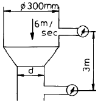
- 20.56 ㎝
- 23.55 ㎝
- 33.55 ㎝
- 55.54 ㎝
(정답률: 알수없음)
83. 기체 연료의 폭발 한계를 설명한 것 중 옳지 않은 것은?
- 수소, 에탄, 일산화탄소는 비교적 폭발 범위가 넓다.
- 폭발 하한보다 낮은 경우는 폭발하지 않는다.
- 프로판, 부탄 등은 폭발 범위가 비교적 좁다.
- 연료가스의 부피가 공기 부피보다 많으면 폭발한다.
(정답률: 40%)
84. 동압과 정압을 측정하여 일정점에서의 유속을 측정하는 계기는?
- 오리피스
- 로우터미터
- 벤튜리미터
- 피토관
(정답률: 36%)
85. 적외선 가스분석계로 분석하기가 어려운 가스는?
- Ne
- H2
- CO2
- SO2
(정답률: 36%)
86. 가스 분석에서 가스와 흡수제가 바르게 짝지어진 것은?
- CO2 - 발연황산
- C2H4 - 33% KOH 용액
- CO - 암모니아성 염화 제1구리 용액
- O2 - 피롤가롤 산성용액
(정답률: 58%)
87. 다음은 가스미터 교정 시 고려해야 할 사항들이다. 정밀도 및 정확도에 영향이 적기 때문에 보정절차를 생략할 수 있는 것은?
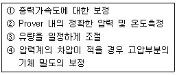
- ①, ②
- ①, ③
- ①, ④
- ②, ④
(정답률: 40%)
88. 루츠 가스미터의 고장에 대하여 설명한 것으로 옳지 않은 것은?
- 부동 - 회전자는 회전하고 있으나, 미터의 지침이 움직이지 않는 고장
- 떨림 - 회전자 베어링의 마모에 의한 회전자 접촉 등에 의해 일어나는 고장
- 기차불량 - 회전자 베어링의 마모에 의한 간격 증대 등에 의해 일어나는 고장
- 감도 불량이나 이상음의 발생 등이 일어나는 고장도 있다.
(정답률: 28%)
89. 두가지 금속의 열 기전력차를 이용하여 온도를 측정하는 온도계는?
- 바이메탈 온도계
- 열전대 온도계
- 방사 온도계
- 광 온도계
(정답률: 62%)
90. Process controller 의 난이도를 표시하는 값으로 dead time(L)과 time constant(T) 의 비, 즉 L/T 이 사용되는데 이 값이 클 경우에 제어계는 어떠한가?
- P 동작 조절기를 사용한다.
- PD 동작 조절기를 사용한다.
- 제어하기가 쉽다.
- 제어하기가 어렵다.
(정답률: 20%)
91. 가스미터(계량기)의 허용 최대압력 손실은?
- 30mm H2O
- 40mm H2O
- 50mm H2O
- 60mm H2O
(정답률: 25%)
92. 비례적분 제어동작에 대한 설명으로 옳은 것은?
- 출력이 제어편차의 시간변화에 비례한다.
- 전달 느림이 크면 사이클링의 주기가 커진다.
- 가격이 싸고 조절속도가 빠르다.
- 진동이 제거되어 빨리 안정된다.
(정답률: 30%)
93. 다음 중 탄성식 압력계가 아닌 것은?
- 부르돈관식
- 기준분동식
- 다이어프램식
- 벨로즈식
(정답률: 37%)
94. 배관의 모든 조건이 같을 때 지름을 2배로 하면 체적유량은 몇 배가 되는가?
- 2배
- 4배
- 6배
- 8배
(정답률: 75%)
95. 가스미터의 기준미터가 200mL 일 때 사용 중인 가스미터의 최대 허용오차는?
- ± 2mL
- ± 4mL
- ± 5mL
- ± 8mL
(정답률: 34%)
96. 가스미터에 다음과 같이 표기 되어 있다. 이에 대한 설명으로 옳은 것은?
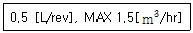
- 가스미터의 감도유량이 0.5리터이며 사용 최대유량은 시간당 1.5m3 이다.
- 가스미터의 감도유량이 0.5리터이며 오차의 최대값은 시간당 1.5m3 이다.
- 계량실의 1주기 체적이 0.5리터이며 오차의 최대값은 시간당 1.5m3 이다.
- 계량실의 1주기 체적이 0.5리터이며 사용 최대유량은 시간당 1.5m3 이다.
(정답률: 50%)
97. 방전이온화 검출기(DID)를 지닌 가스크로마토그래프를 사용하여 초 고순도 산소(O2) 중의 미량불순물 (Ar, N2, CH4, H2) 을 분석하고자 한다. 정확한 분석을 위해 도입되어야 할 기법 중 가장 바람직한 것은?
- 캐리어가스로 알곤(Ar)을 사용 한다.
- 캐리어가스로 질소(N2)를 사용 한다.
- 팔라듐 멤브레인으로 된 수소분리 시스템 (Hydrogen Separator)을 사용 한다.
- 구리(Cu) 또는 망간(Mn)으로 된 산소트랩 (Oxygen trap)을 사용 한다.
(정답률: 30%)
98. 도시가스의 열량, 압력, 연소성 측정에 대한 설명으로 옳지 않은 것은?
- 열량은 제조소의 배송기 또는 압송기 출구에서 자동 열량측정기로 측정 기록한다.
- 압력은 가스홀더의 출구, 정압기의 출구, 가스공급 시설의 끝부분에서 자기압력계로 측정한다.
- 연소성은 웨베지수 및 연소속도를 사용하여 측정한다
- 가스압력은 330mmH2O 이상 430mmH2O 이내로 유지한다.
(정답률: 22%)
99. 다음 그림은 어떤 가스미터인가?
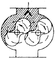
- 건식 가스미터
- 습식 가스미터
- 루츠미터
- 오리피스미터
(정답률: 알수없음)
100. 가스크로마토그래피의 장치구성요소에 속하지 않는 것은?
- 분리관(칼럼)
- 검출기
- 광원
- 기록계
(정답률: 58%)